Response Surface Modeling¶
Introduction¶
The response surface modeling (RSM) technique provides a tool that gives us the ability to model the behavior of our signaling system as the circuit and interconnect characteristics vary. RSM works by fitting a statistical model of the output response as a function of changes in the input variables. [1]
The general form of the response surface model is y is the system response. β is the model fit coefficients. x is the system input.
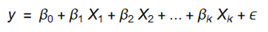It is highly flexible, allowing to fit curved response surface by using higher-order combinations of input variables. In general ,second-order models are sufficient for high-speed signaling links.
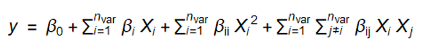RSM Procedure¶
Let’s understand this by using step by step coding.
After finish a Doe simulation . we will get an input and output table.¶
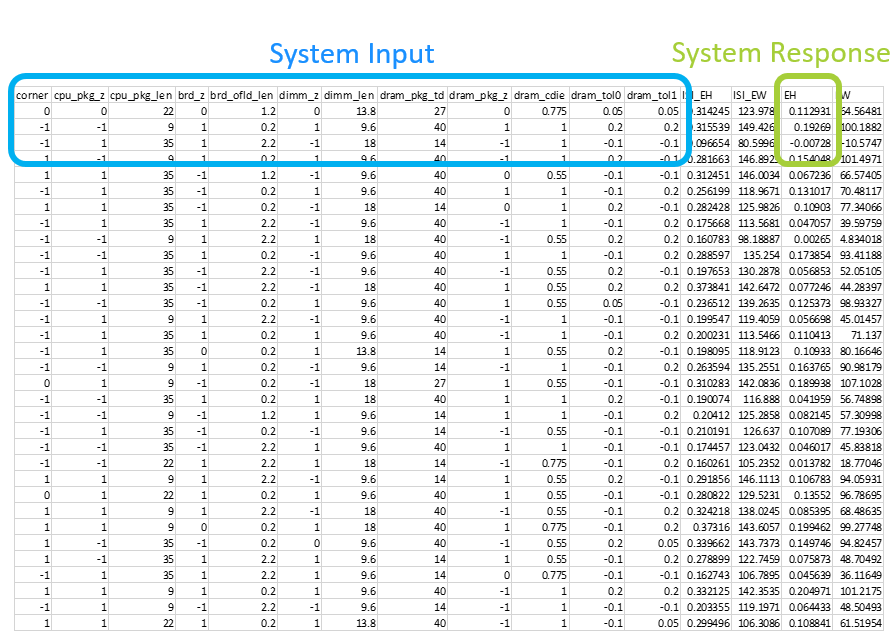
Generate a second-order table.(focus on eye-height this time)¶
Input variable number is 12.[corner,cpu_pkg_z,cpu_pkg_len,brd_z,brd_ofld_len,dimm_z,dimm_len, dram_pkg_td,dram_pkg_z,dram_cdie,dram_tol0,dram_tol1]
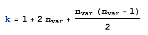Then the amount of terms in 2nd-ord RSM model , k , is 91 (1+2*12+12*(12-1)/2=91)
see the number and list
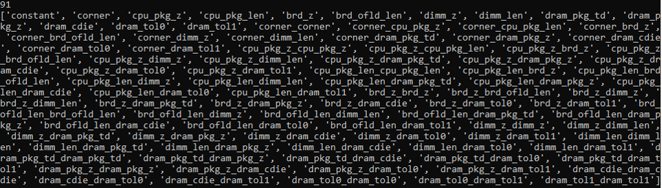check the corresponding value with input matrix.
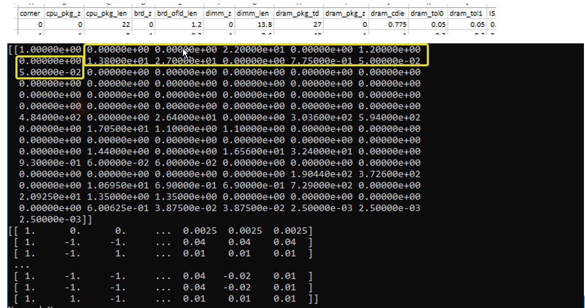
Normalize the martix.¶
Rather than use the raw data, regression tool usually fit the model to a transformed version of data. The purpose is to minimize the infulence of different term’s coefficient. Refernce Book [1] proposal an round normalization while I suggest to use legacy normalization. See following comparison.
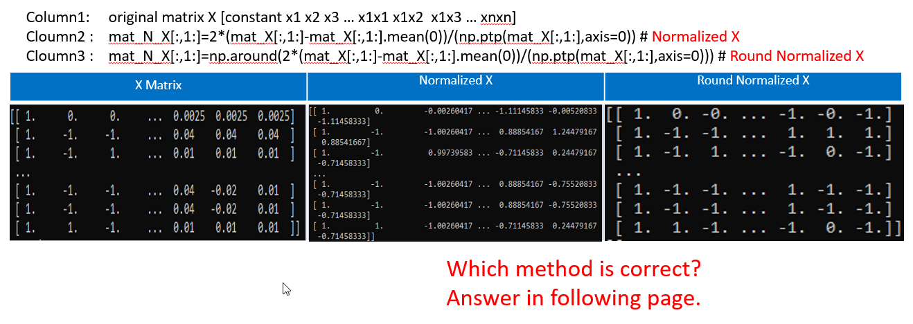Which method is better? Let’s see the result in MMSE part.
Regression Analysis.¶
MMSE result
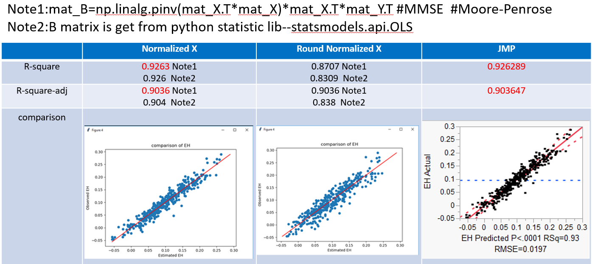Conclusion: The result shows normalized X is better than Round Normalized X in regression analysis.
Why?
Sometimes DOE table is not orthogonal array. Round Normalization introduce extra error.
Regression Result Criteria.¶
Residuals vector / standard residual/R-square/R-square_adj/RMSE
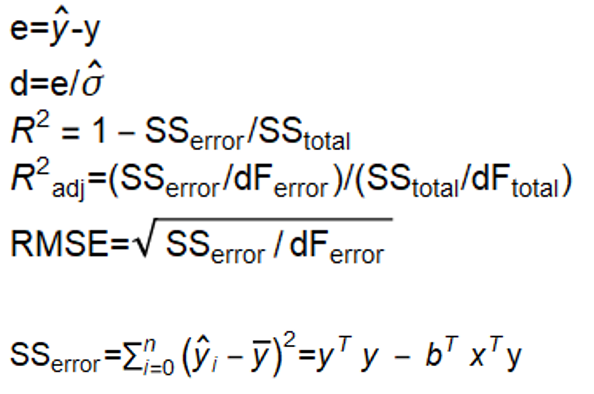 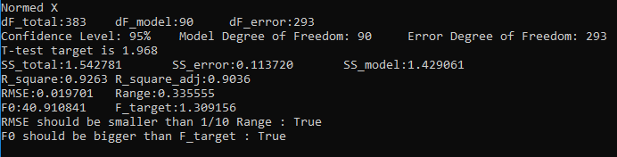 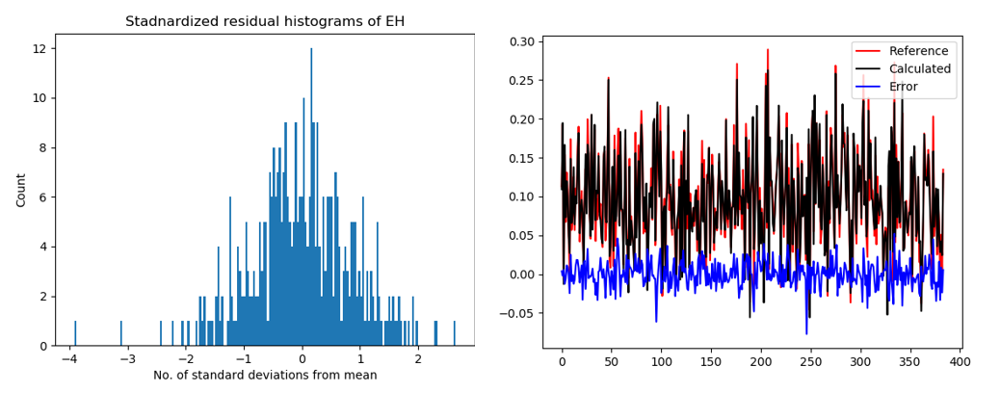
Significant Test.¶
Model significance : the F-Test
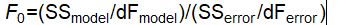Parameter significance : Individual t-Tests
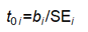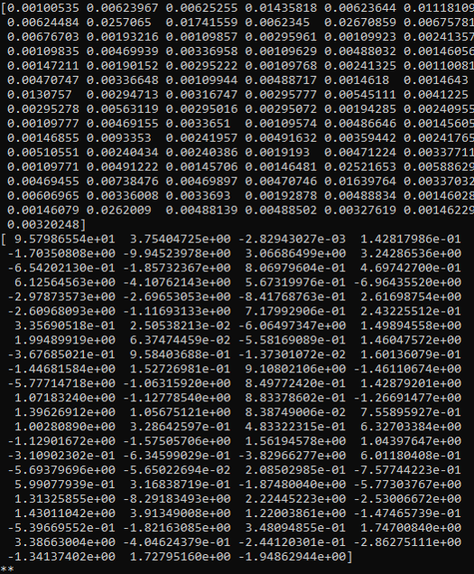est_vari_model_err=SS_error/dF_error SE_i=(est_vari_model_err*np.diag(np.linalg.pinv(mat_X.T*mat_X)))**0.5 # the standard error of regression t_stat_i=B/SE_i print (SE_i) print (t_stat_i)Accoring to Refernce Book [1] , ‘At a 95% confidence level, the critical value for the t-statistic is 2.365 obtrained from Appendix D. Result of the hypothesis tests are listed in the rightmost column of the table ,which show that 11 of the 20 model terms are significant for eye width model.All other terms can be removed from the model without significant degradation in the model fit’
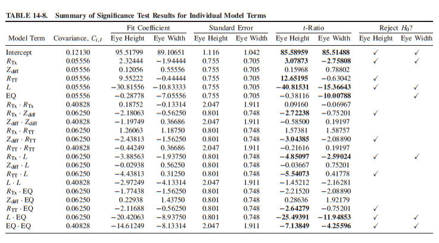My option is not good . Refernce Book [3] propose to use stepwise for further optimization.
Stepwise is not considered in this document.
Result comparison with commerical tool [2]¶
JMP’s MMSE result .(RSM backward sim stepwise 1st time result with full parameter)
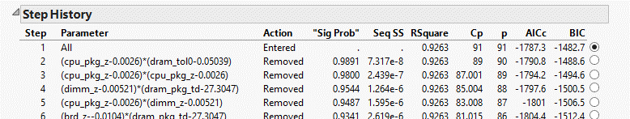 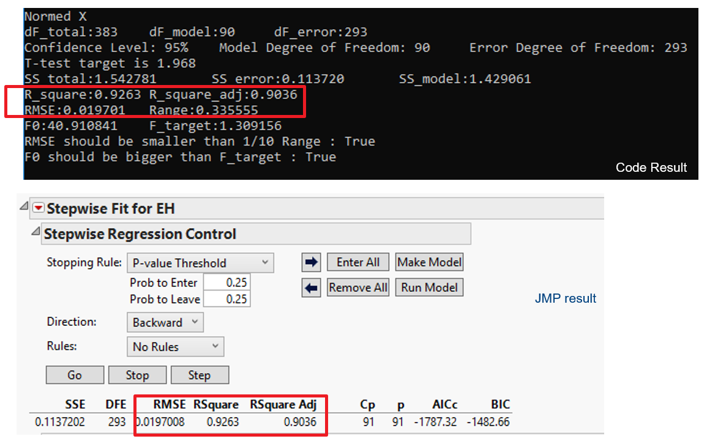Coefficients Comparison.
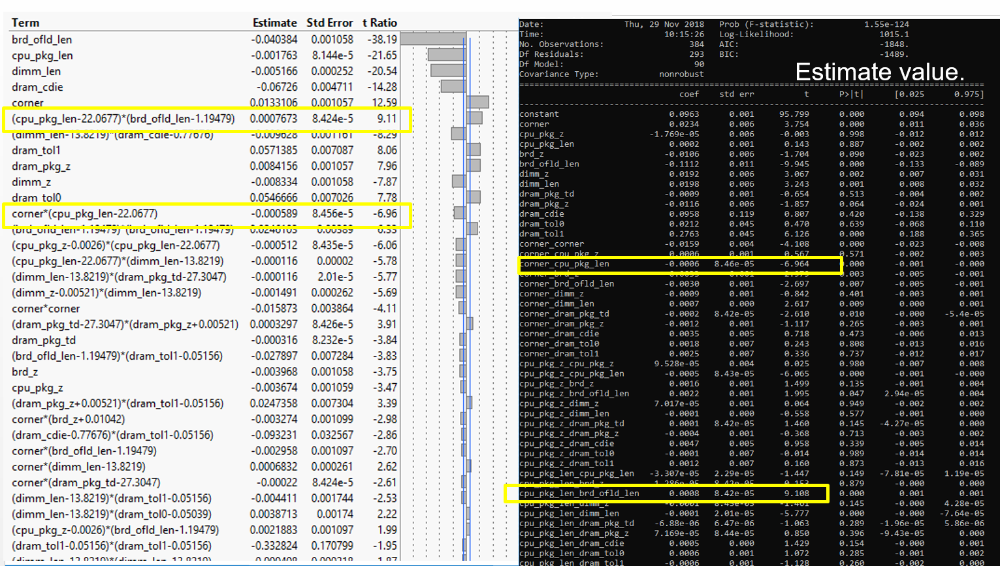Conclusion:
Constant and 1st order item coefficient value show big difference. 2nd order item coefficient value show good correlation. The output estimate by coefficient shows good correlation. It’s weird.
Why?
Different expression
Orginal JMP Equation
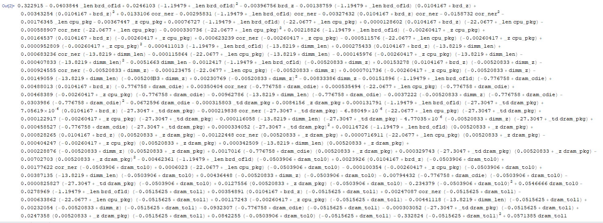Expand polynomial expressions in Mathematica
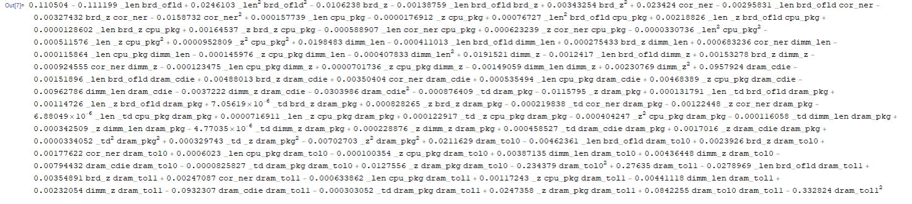After expand the equation,Correlate well.
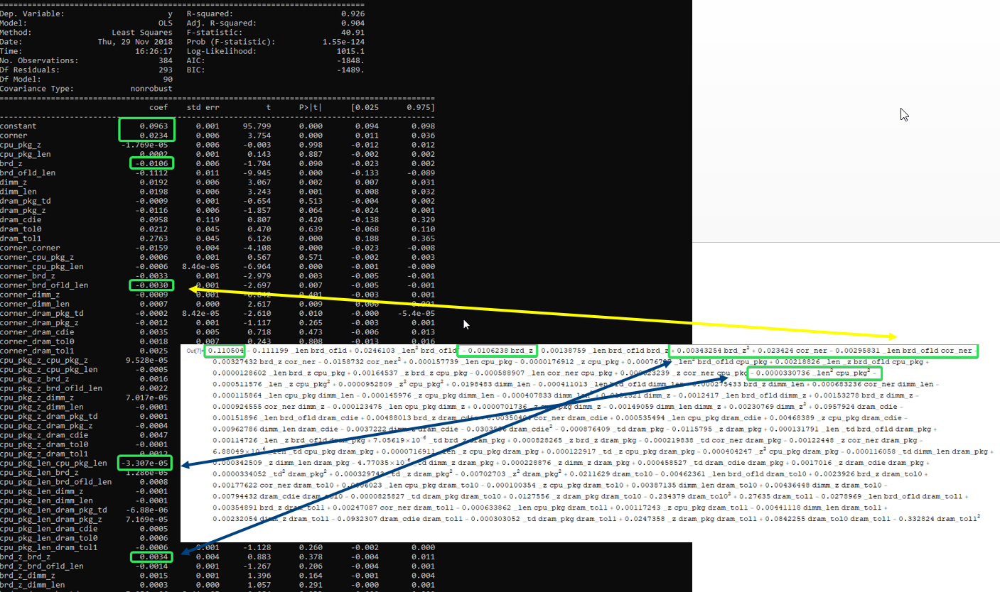 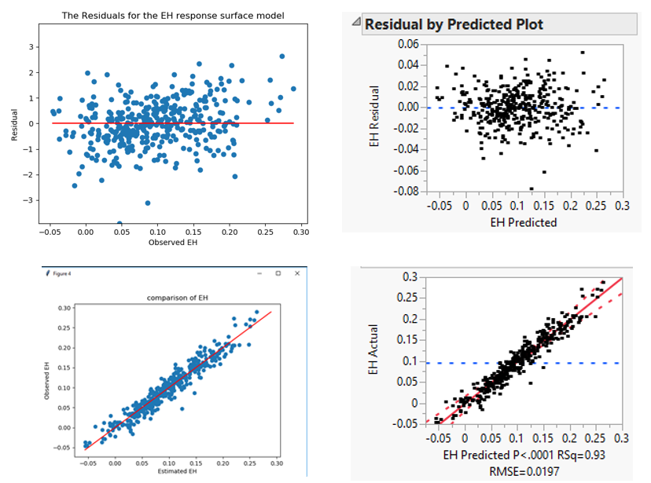
Conclusion.¶
Current code can correlate JMP stepwise 1st step well.
UPM Analysis.¶
Generate 1Million row variable table and get the output according to equation after stepwise.
Sort the result to see the system’s performance. Eg.0.01% value.
| [1] | (1, 2, 3) Advanced Signal integrity for high speed digital design. Stephen H.HALL & Howard L.Heck |
| [2] | JMP help. |
| [3] | Regression analysis and experiment design. Shisong Mao. |